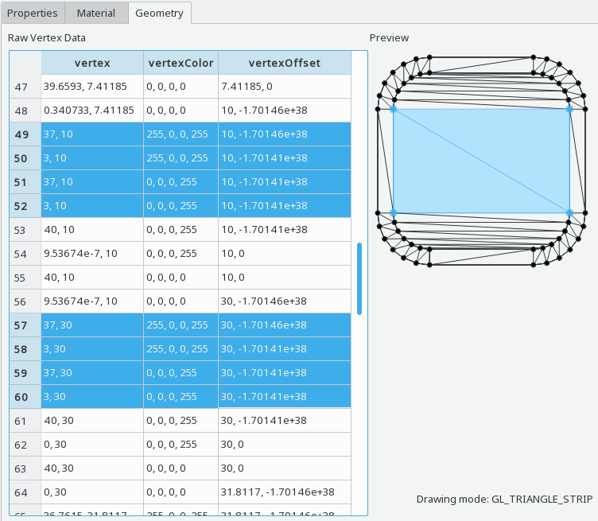

When having a scene graph node with an attached QSGGeometry instance selected (such as a QSGBasicGeometryNode instance), the scene graph geometry view shows the vertex data associated with that node. This is primarily accessible via the scene graph browser in the Qt Quick 2 Inspector tool.

The scene graph geometry view consists of two parts, the raw vertex data table on the left side, and the vertex preview on the right side.
The raw vertex data table shows one line per vertex, the available columns depend on the specific data layout of the corresponding scene graph node. Typically this includes at least the vertex position (named "vertex") and the vertex color. One or multiple vertices can be selected, the selection is also shown in the vertex preview on the right.
The vertex preview uses the vertex position to visualize the layout of the vertices. Individual vertices can be selected by clicking on them, the selection can be extended by holding the Ctrl key while clicking on a vertex. The selection is synchronized with the vertex data table on the left.